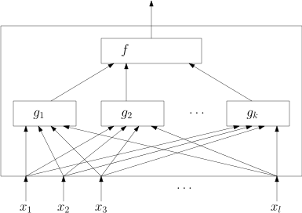

4.1 Primitive Rekursion: Motivation und Definitionen./course1/wly/04/01-primitive-recursion-definitions.wly:2:11
4.1 Primitive Rekursion: Motivation und Definitionen./course1/wly/04/01-primitive-recursion-definitions.wly:2:11
Primitive Rekursion ist ein Versuch, Berechbarkeit von./course1/wly/04/01-primitive-recursion-definitions.wly:4:5 Funktionen ./course1/wly/04/01-primitive-recursion-definitions.wly:5:5$f: \N^k \rightarrow \N$./course1/wly/04/01-primitive-recursion-definitions.wly:5:16 anhand eines./course1/wly/04/01-primitive-recursion-definitions.wly:5:40 "Baukastenprinzips" zu modellieren. Man stellt gewisse./course1/wly/04/01-primitive-recursion-definitions.wly:6:5 Basisfunktionen als "offensichtlich berechenbar" zur./course1/wly/04/01-primitive-recursion-definitions.wly:7:5 Verfügung und beschreibt ./course1/wly/04/01-primitive-recursion-definitions.wly:8:5Kombinatoren./course1/wly/04/01-primitive-recursion-definitions.wly:8:31,./course1/wly/04/01-primitive-recursion-definitions.wly:8:44 die aus bereits./course1/wly/04/01-primitive-recursion-definitions.wly:8:44 konstruierten Funktionen neue bauen können. Die./course1/wly/04/01-primitive-recursion-definitions.wly:9:5 primitiv-rekursiven Funktionen sind dann all jene, die./course1/wly/04/01-primitive-recursion-definitions.wly:10:5 mittels der Kombinatoren von den Basisfunktionen ausgehend./course1/wly/04/01-primitive-recursion-definitions.wly:11:5 konstruiert werden können. Die Basisfunktionen sind:./course1/wly/04/01-primitive-recursion-definitions.wly:12:5
Sind diese Funktionen "offensichtlich berechenbar"? Ich./course1/wly/04/01-primitive-recursion-definitions.wly:24:5 würde sagen, die fundamentale Eigenschaft der natürlichen./course1/wly/04/01-primitive-recursion-definitions.wly:25:5 Zahlen ist, dass jede Zahl einen Nachfolger (successor)./course1/wly/04/01-primitive-recursion-definitions.wly:26:5 hat; daher ist irgendwie klar, dass ./course1/wly/04/01-primitive-recursion-definitions.wly:27:5$\succ$./course1/wly/04/01-primitive-recursion-definitions.wly:27:41 berechen bar./course1/wly/04/01-primitive-recursion-definitions.wly:27:48 ist. Aber seien wir vorsichtig: wenn wir für natürliche./course1/wly/04/01-primitive-recursion-definitions.wly:28:5 Zahlen die Dezimaldarstellung (oder Binärdarstellung,./course1/wly/04/01-primitive-recursion-definitions.wly:29:5 spielt keine Rolle) verwenden, dann ist die Operation./course1/wly/04/01-primitive-recursion-definitions.wly:30:5 ./course1/wly/04/01-primitive-recursion-definitions.wly:31:5$x \mapsto x+1$./course1/wly/04/01-primitive-recursion-definitions.wly:31:5 bereits eine nicht ganz triviale./course1/wly/04/01-primitive-recursion-definitions.wly:31:20 Operation, sie erfordert beispielsweise Schleifen (von./course1/wly/04/01-primitive-recursion-definitions.wly:32:5 rechts nach links durchgehen), if-then-else-Ausdrücke (gibt./course1/wly/04/01-primitive-recursion-definitions.wly:33:5 es ein Carry?) etc. Daher sollten Sie so tun, also würden./course1/wly/04/01-primitive-recursion-definitions.wly:34:5 wir natürliche Zahlen in ./course1/wly/04/01-primitive-recursion-definitions.wly:35:5unärer Schreibweise./course1/wly/04/01-primitive-recursion-definitions.wly:35:31 (auhc./course1/wly/04/01-primitive-recursion-definitions.wly:35:51 Steinzeitnotation genannt) darstellen, also vier ./course1/wly/04/01-primitive-recursion-definitions.wly:36:5$= 1111$./course1/wly/04/01-primitive-recursion-definitions.wly:36:54,./course1/wly/04/01-primitive-recursion-definitions.wly:36:62 ./course1/wly/04/01-primitive-recursion-definitions.wly:36:62 sieben = ./course1/wly/04/01-primitive-recursion-definitions.wly:37:5$= 1111111$./course1/wly/04/01-primitive-recursion-definitions.wly:37:14../course1/wly/04/01-primitive-recursion-definitions.wly:37:25 Jezt brauchen wir für succ kein./course1/wly/04/01-primitive-recursion-definitions.wly:37:25 if-then-else und keine Schleifen, denn ./course1/wly/04/01-primitive-recursion-definitions.wly:38:5$\succ(x) = 1x$./course1/wly/04/01-primitive-recursion-definitions.wly:38:44../course1/wly/04/01-primitive-recursion-definitions.wly:38:59 ./course1/wly/04/01-primitive-recursion-definitions.wly:38:59 Eine weitere Klasse von "offensichtlich" berechenbaren./course1/wly/04/01-primitive-recursion-definitions.wly:39:5 Funktionen sind die sogenannten Projektionen ./course1/wly/04/01-primitive-recursion-definitions.wly:40:5$\pi^n_k$./course1/wly/04/01-primitive-recursion-definitions.wly:40:50,./course1/wly/04/01-primitive-recursion-definitions.wly:40:59 ./course1/wly/04/01-primitive-recursion-definitions.wly:40:59 definiert als./course1/wly/04/01-primitive-recursion-definitions.wly:41:5
Irgendwie sollte auch hier klar sein, dass die Vorschrift./course1/wly/04/01-primitive-recursion-definitions.wly:48:5 "gib von den 3 Argumenten, die Du erhältst, das erste./course1/wly/04/01-primitive-recursion-definitions.wly:49:5 zurück" ohne Zweifel "berechenbar" ist. Weil wir bald alles./course1/wly/04/01-primitive-recursion-definitions.wly:50:5 in einem Python-Framework implementieren werden, sei./course1/wly/04/01-primitive-recursion-definitions.wly:51:5 angemerkt, dass ich die Zählung der Indizes bei 0 beginnen./course1/wly/04/01-primitive-recursion-definitions.wly:52:5 lasse, also zum Beispiel./course1/wly/04/01-primitive-recursion-definitions.wly:53:5
Auch die Stelligkeit ./course1/wly/04/01-primitive-recursion-definitions.wly:60:5$n$./course1/wly/04/01-primitive-recursion-definitions.wly:60:26 lasse ich oft weg und schreibe./course1/wly/04/01-primitive-recursion-definitions.wly:60:29 einfach ./course1/wly/04/01-primitive-recursion-definitions.wly:61:5$\pi_k$./course1/wly/04/01-primitive-recursion-definitions.wly:61:13 statt ./course1/wly/04/01-primitive-recursion-definitions.wly:61:20$\pi^n_k$./course1/wly/04/01-primitive-recursion-definitions.wly:61:27../course1/wly/04/01-primitive-recursion-definitions.wly:61:36 ./course1/wly/04/01-primitive-recursion-definitions.wly:61:36Kombinatoren../course1/wly/04/01-primitive-recursion-definitions.wly:61:39 Die./course1/wly/04/01-primitive-recursion-definitions.wly:61:53 primitive Rekursion stellt zwei Kombinatoren zur Verfügung:./course1/wly/04/01-primitive-recursion-definitions.wly:62:5 Komposition (Verknüpfung) und primitive Rekursion../course1/wly/04/01-primitive-recursion-definitions.wly:63:5
Definition 4.1.1 (Komposition)./course1/wly/04/01-primitive-recursion-definitions.wly:65:5 Sei ./course1/wly/04/01-primitive-recursion-definitions.wly:66:24$f: \N^k \rightarrow \N$./course1/wly/04/01-primitive-recursion-definitions.wly:66:29 und./course1/wly/04/01-primitive-recursion-definitions.wly:66:53 ./course1/wly/04/01-primitive-recursion-definitions.wly:67:9$g_1, \dots, g_k: \N^l \rightarrow \N$./course1/wly/04/01-primitive-recursion-definitions.wly:67:9../course1/wly/04/01-primitive-recursion-definitions.wly:67:47 Dann ist./course1/wly/04/01-primitive-recursion-definitions.wly:67:47 ./course1/wly/04/01-primitive-recursion-definitions.wly:68:9$\comp(f, g_1, \dots, g_k)$./course1/wly/04/01-primitive-recursion-definitions.wly:68:9 die Funktion./course1/wly/04/01-primitive-recursion-definitions.wly:68:36
Graphisch können Sie sich Komposition so vorstellen:./course1/wly/04/01-primitive-recursion-definitions.wly:75:9

course1/public/img/primitive-rekursion/composition.svgUm aber komplexere Operationen implementieren zu können,./course1/wly/04/01-primitive-recursion-definitions.wly:82:5 brauchen wir eine Art von Schleife. Was ist die einfachste./course1/wly/04/01-primitive-recursion-definitions.wly:83:5 Art von Schleife oder Rekursion. Wir dürfen nur eine sehr./course1/wly/04/01-primitive-recursion-definitions.wly:84:5 beschränkte Form der Rekursion verwenden:./course1/wly/04/01-primitive-recursion-definitions.wly:85:5
Definition 4.1.2 Primitive Rekursion./course1/wly/04/01-primitive-recursion-definitions.wly:87:5 Seien ./course1/wly/04/01-primitive-recursion-definitions.wly:88:30$g: \N^k \rightarrow \N$./course1/wly/04/01-primitive-recursion-definitions.wly:88:37 und./course1/wly/04/01-primitive-recursion-definitions.wly:88:61 ./course1/wly/04/01-primitive-recursion-definitions.wly:89:9$h: \N^{k+2} \rightarrow \N$./course1/wly/04/01-primitive-recursion-definitions.wly:89:9../course1/wly/04/01-primitive-recursion-definitions.wly:89:37 Wir definieren eine neue./course1/wly/04/01-primitive-recursion-definitions.wly:89:37 Funktion ./course1/wly/04/01-primitive-recursion-definitions.wly:90:9$f: \N^{k+1} \rightarrow \N$./course1/wly/04/01-primitive-recursion-definitions.wly:90:18 wie folgt:./course1/wly/04/01-primitive-recursion-definitions.wly:90:46
Für diese Konstruktion schreiben wir kompakt./course1/wly/04/01-primitive-recursion-definitions.wly:100:9 ./course1/wly/04/01-primitive-recursion-definitions.wly:101:9$f := \primrec(g,h)$./course1/wly/04/01-primitive-recursion-definitions.wly:101:9../course1/wly/04/01-primitive-recursion-definitions.wly:101:29
Wenn Sie Rekursionshasser sind, dann können Sie sich es./course1/wly/04/01-primitive-recursion-definitions.wly:103:5
als Funktion mit einer
./course1/wly/04/01-primitive-recursion-definitions.wly:104:5for./course1/wly/04/01-primitive-recursion-definitions.wly:104:29-Schleife./course1/wly/04/01-primitive-recursion-definitions.wly:104:33
vorstellen, in der./course1/wly/04/01-primitive-recursion-definitions.wly:104:33
nur eine lokale Variable erlaubt ist:./course1/wly/04/01-primitive-recursion-definitions.wly:105:5
def PrimRec(g, h):./course1/wly/04/01-primitive-recursion-definitions.wly:108:5 def f(t,*x):./course1/wly/04/01-primitive-recursion-definitions.wly:109:5 temp = g(*x)./course1/wly/04/01-primitive-recursion-definitions.wly:110:5 for i in range(t):./course1/wly/04/01-primitive-recursion-definitions.wly:111:5 temp = h(temp, i, *x)./course1/wly/04/01-primitive-recursion-definitions.wly:112:5 return temp./course1/wly/04/01-primitive-recursion-definitions.wly:113:5 return f./course1/wly/04/01-primitive-recursion-definitions.wly:114:5
Die Forderung, dass man nur ./course1/wly/04/01-primitive-recursion-definitions.wly:117:5eine./course1/wly/04/01-primitive-recursion-definitions.wly:117:34 lokale Variable durch./course1/wly/04/01-primitive-recursion-definitions.wly:117:39 die Schleife führen darf, scheint sehr restriktiv; es ist./course1/wly/04/01-primitive-recursion-definitions.wly:118:5 aber wohl die einfachste Form einer Schleife, die wirklich./course1/wly/04/01-primitive-recursion-definitions.wly:119:5 etwas "schleifenhaftes" tut../course1/wly/04/01-primitive-recursion-definitions.wly:120:5
Demo 4.1.3./course1/wly/04/01-primitive-recursion-definitions.wly:122:5 ./course1/wly/04/01-primitive-recursion-definitions.wly:122:5 Speichern Sie die Datei./course1/wly/04/01-primitive-recursion-definitions.wly:123:9 ./course1/wly/04/01-primitive-recursion-definitions.wly:124:9primrec.py./course1/wly/04/01-primitive-recursion-definitions.wly:124:11 ./course1/wly/04/01-primitive-recursion-definitions.wly:124:72 auf Ihrem Rechner. Diese Datei stellt ein Framework für die./course1/wly/04/01-primitive-recursion-definitions.wly:125:9 Implementierung primitiv rekursiver Funktionen zur./course1/wly/04/01-primitive-recursion-definitions.wly:126:9 Verfügung. Insbesondere implementiert sie die folgenden./course1/wly/04/01-primitive-recursion-definitions.wly:127:9 Funktion ./course1/wly/04/01-primitive-recursion-definitions.wly:128:9$\N^k \rightarrow \N$./course1/wly/04/01-primitive-recursion-definitions.wly:128:18:./course1/wly/04/01-primitive-recursion-definitions.wly:128:39
als "übliche" Python-Funktionen. Darüberhinaus./course1/wly/04/01-primitive-recursion-definitions.wly:135:9 implementiert sie die folgenden Kombinatoren, welche Ihnen./course1/wly/04/01-primitive-recursion-definitions.wly:136:9 nach den Regeln der primitiven Rekursion neue Funktionen./course1/wly/04/01-primitive-recursion-definitions.wly:137:9 erstellt:./course1/wly/04/01-primitive-recursion-definitions.wly:138:9
Proj(k)./course1/wly/04/01-primitive-recursion-definitions.wly:142:18:./course1/wly/04/01-primitive-recursion-definitions.wly:142:26
erzeugt die Funktion./course1/wly/04/01-primitive-recursion-definitions.wly:142:26
Comp(f, g0, g1, ...)./course1/wly/04/01-primitive-recursion-definitions.wly:150:18:./course1/wly/04/01-primitive-recursion-definitions.wly:150:39
erzeugt die Funktion./course1/wly/04/01-primitive-recursion-definitions.wly:150:39
Sie als User müssen sicherstellen, dass die Stelligkeit./course1/wly/04/01-primitive-recursion-definitions.wly:156:17 von ./course1/wly/04/01-primitive-recursion-definitions.wly:157:17$f$./course1/wly/04/01-primitive-recursion-definitions.wly:157:21 mit der Anzahl der als ./course1/wly/04/01-primitive-recursion-definitions.wly:157:24$g_i$./course1/wly/04/01-primitive-recursion-definitions.wly:157:48 übergebenen./course1/wly/04/01-primitive-recursion-definitions.wly:157:53 Funktionen übereinstimmt../course1/wly/04/01-primitive-recursion-definitions.wly:158:17
PrimRec(g,h)./course1/wly/04/01-primitive-recursion-definitions.wly:161:18:./course1/wly/04/01-primitive-recursion-definitions.wly:161:31
erzeugt die Funktion./course1/wly/04/01-primitive-recursion-definitions.wly:161:31
Wenn wir die primitive Rekursion als "Programmiersprache"./course1/wly/04/01-primitive-recursion-definitions.wly:170:9
betrachten, dann heißt das, dass wir neue Funktionen bauen./course1/wly/04/01-primitive-recursion-definitions.wly:171:9
dürfen, indem wir
./course1/wly/04/01-primitive-recursion-definitions.wly:172:9zero,succ,Proj,Comp,PrimRec./course1/wly/04/01-primitive-recursion-definitions.wly:172:28
verwenden,./course1/wly/04/01-primitive-recursion-definitions.wly:172:56
aber nicht selbst Python-Funktionen schreiben. Wir dürfen./course1/wly/04/01-primitive-recursion-definitions.wly:173:9
also nie selbst Integers in die Hand nehmen. Lassen Sie./course1/wly/04/01-primitive-recursion-definitions.wly:174:9
mich das am Beispiel der Addition erklären. Ich will eine./course1/wly/04/01-primitive-recursion-definitions.wly:175:9
Funktion
./course1/wly/04/01-primitive-recursion-definitions.wly:176:9${\rm add}: \N^2 \rightarrow \N$./course1/wly/04/01-primitive-recursion-definitions.wly:176:18
schreiben, die./course1/wly/04/01-primitive-recursion-definitions.wly:176:50
ihre beiden Argumente addiert. Ich darf also nicht einfach./course1/wly/04/01-primitive-recursion-definitions.wly:177:9
python programmieren und./course1/wly/04/01-primitive-recursion-definitions.wly:178:9
def add(x, y)./course1/wly/04/01-primitive-recursion-definitions.wly:181:9 return x + y./course1/wly/04/01-primitive-recursion-definitions.wly:182:9
schreiben, denn unsere "Programmiersprache" ist Primitive./course1/wly/04/01-primitive-recursion-definitions.wly:185:9
Rekursion, nicht Python! Wir müssen uns
./course1/wly/04/01-primitive-recursion-definitions.wly:186:9add./course1/wly/04/01-primitive-recursion-definitions.wly:186:50
aus den./course1/wly/04/01-primitive-recursion-definitions.wly:186:54
Kombinatoren zusammenbasteln. Ich schreibe nun./course1/wly/04/01-primitive-recursion-definitions.wly:187:9
./course1/wly/04/01-primitive-recursion-definitions.wly:188:9${\rm add}(t,x)$./course1/wly/04/01-primitive-recursion-definitions.wly:188:9
statt
./course1/wly/04/01-primitive-recursion-definitions.wly:188:25${\rm add}(x,y)$./course1/wly/04/01-primitive-recursion-definitions.wly:188:32,./course1/wly/04/01-primitive-recursion-definitions.wly:188:48
um den./course1/wly/04/01-primitive-recursion-definitions.wly:188:48
Rekursionsparameter
./course1/wly/04/01-primitive-recursion-definitions.wly:189:9$t$./course1/wly/04/01-primitive-recursion-definitions.wly:189:29
deutlich zu machen../course1/wly/04/01-primitive-recursion-definitions.wly:189:32
Wir sehen also, dass dies eine Anwendung der primitiven./course1/wly/04/01-primitive-recursion-definitions.wly:202:9 Rekursion ist mit ./course1/wly/04/01-primitive-recursion-definitions.wly:203:9$g = \pi_0$./course1/wly/04/01-primitive-recursion-definitions.wly:203:27 und./course1/wly/04/01-primitive-recursion-definitions.wly:203:38 ./course1/wly/04/01-primitive-recursion-definitions.wly:204:9$h = {\comp}(\succ, \pi_0)$./course1/wly/04/01-primitive-recursion-definitions.wly:204:9,./course1/wly/04/01-primitive-recursion-definitions.wly:204:36 also./course1/wly/04/01-primitive-recursion-definitions.wly:204:36
p0 = Proj(0)./course1/wly/04/01-primitive-recursion-definitions.wly:207:9 add = PrimRec (p0, Comp(succ,p0))./course1/wly/04/01-primitive-recursion-definitions.wly:208:9
Übungsaufgabe 4.1.1./course1/wly/04/01-primitive-recursion-definitions.wly:211:5
./course1/wly/04/01-primitive-recursion-definitions.wly:211:5
Zeigen Sie, dass die folgenden Funktionen./course1/wly/04/01-primitive-recursion-definitions.wly:212:9
primitiv-rekursiv sind, und implementieren Sie sie in./course1/wly/04/01-primitive-recursion-definitions.wly:213:9
meinem Python-Framework, so wie ich Addition mit
./course1/wly/04/01-primitive-recursion-definitions.wly:214:9add =./course1/wly/04/01-primitive-recursion-definitions.wly:214:59
PrimRec (p0, Comp(succ,p0))./course1/wly/04/01-primitive-recursion-definitions.wly:215:9
implementiert habe:./course1/wly/04/01-primitive-recursion-definitions.wly:215:37
${\rm mult}: (x,y) \mapsto x*y$./course1/wly/04/01-primitive-recursion-definitions.wly:219:17
${\rm exp}: (a,b) \mapsto a^b$./course1/wly/04/01-primitive-recursion-definitions.wly:222:17
${\rm pred}: x \mapsto \max(0, x-1)$./course1/wly/04/01-primitive-recursion-definitions.wly:225:17
${\rm minus}: (x,y) \mapsto x-y$./course1/wly/04/01-primitive-recursion-definitions.wly:228:17
Tip:./course1/wly/04/01-primitive-recursion-definitions.wly:230:10 Für exp und minus ist es einfacher, die Argumente./course1/wly/04/01-primitive-recursion-definitions.wly:230:15 "umgedreht" zu betrachten, also ./course1/wly/04/01-primitive-recursion-definitions.wly:231:9$(a,b) \mapsto b^a$./course1/wly/04/01-primitive-recursion-definitions.wly:231:41 und./course1/wly/04/01-primitive-recursion-definitions.wly:231:60 ./course1/wly/04/01-primitive-recursion-definitions.wly:232:9$(x,y) \mapsto y-x$./course1/wly/04/01-primitive-recursion-definitions.wly:232:9../course1/wly/04/01-primitive-recursion-definitions.wly:232:28
Übungsaufgabe 4.1.2./course1/wly/04/01-primitive-recursion-definitions.wly:234:5 ./course1/wly/04/01-primitive-recursion-definitions.wly:234:5 Wenn Sie die vorherige Übungsaufgabe gelöst (oder darüber./course1/wly/04/01-primitive-recursion-definitions.wly:235:9 aufgegeben) haben, sehen Sie sich die Datei./course1/wly/04/01-primitive-recursion-definitions.wly:236:9 ./course1/wly/04/01-primitive-recursion-definitions.wly:237:9stockpile.py./course1/wly/04/01-primitive-recursion-definitions.wly:237:11 ./course1/wly/04/01-primitive-recursion-definitions.wly:237:74 an, in der ich diese Funktionen zum Großteil implementiert./course1/wly/04/01-primitive-recursion-definitions.wly:238:9 habe (basierend auf den Übungen, die wir direkt in der./course1/wly/04/01-primitive-recursion-definitions.wly:239:9 Vorlesung gemacht haben). Experimentieren Sie weiter und./course1/wly/04/01-primitive-recursion-definitions.wly:240:9 implementieren Sie "Boolesche" Prädikate und Funktionen wie./course1/wly/04/01-primitive-recursion-definitions.wly:241:9
isPositive./course1/wly/04/01-primitive-recursion-definitions.wly:245:18
greaterThan, lessThan, greaterEqual, lessEqual./course1/wly/04/01-primitive-recursion-definitions.wly:248:18
max, min./course1/wly/04/01-primitive-recursion-definitions.wly:251:18
ifThenElse(x,y,z)./course1/wly/04/01-primitive-recursion-definitions.wly:254:18:./course1/wly/04/01-primitive-recursion-definitions.wly:254:36
dies soll
./course1/wly/04/01-primitive-recursion-definitions.wly:254:36$z$./course1/wly/04/01-primitive-recursion-definitions.wly:254:48
zurückliefern, falls./course1/wly/04/01-primitive-recursion-definitions.wly:254:51
./course1/wly/04/01-primitive-recursion-definitions.wly:255:17$x=0$./course1/wly/04/01-primitive-recursion-definitions.wly:255:17
(also
./course1/wly/04/01-primitive-recursion-definitions.wly:255:22false./course1/wly/04/01-primitive-recursion-definitions.wly:255:30)./course1/wly/04/01-primitive-recursion-definitions.wly:255:36
ist, und
./course1/wly/04/01-primitive-recursion-definitions.wly:255:36$y$./course1/wly/04/01-primitive-recursion-definitions.wly:255:47
sonst../course1/wly/04/01-primitive-recursion-definitions.wly:255:50